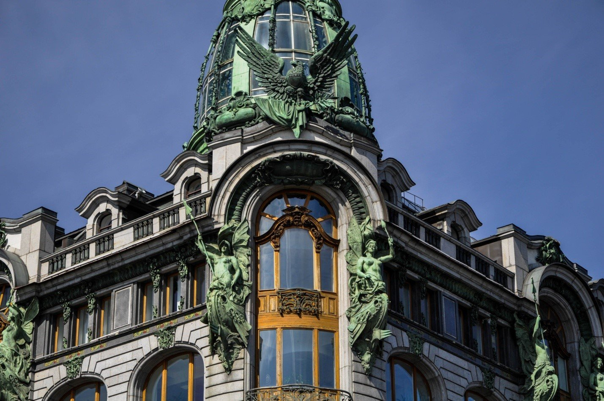
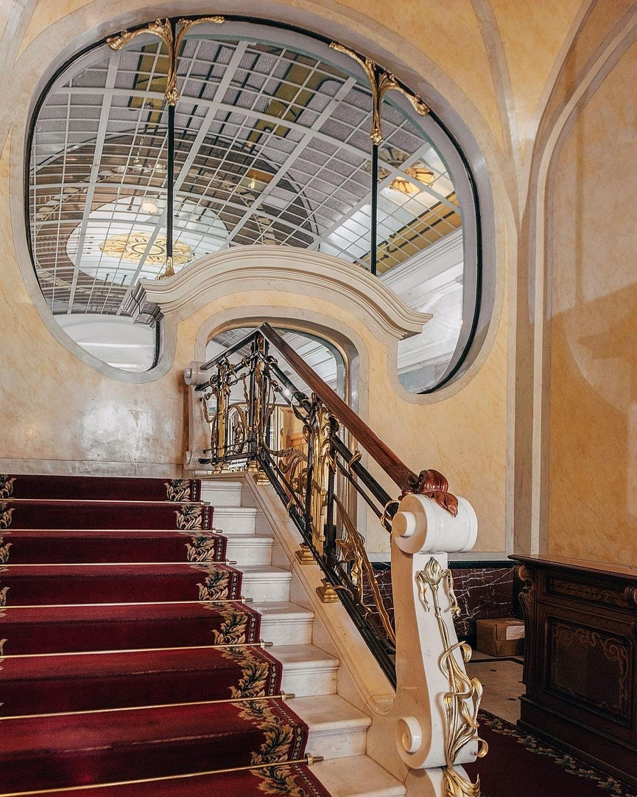

Цена: от 1500 ₽.
Одним из наиболее узнаваемых сооружений Санкт-Петербурга остается Дом Зингера. Спроектировал здание архитектор Сюзор. Именно под его началом было проведено строительство с 1902 по 1904 года. Выполнен этот архитектурный объект был в стиле модерн. Помимо правления компании «Зингер», размещались в здании книжные издательства, мастерская, консульство США и крупнейший в России книжный магазин. Строительство Дома Зингера на углу канала Грибоедова и Невского проспекта неслучайно. Ведь тогда это был район с максимальной торгово-деловой активностью. Во время строительства архитектор применил несколько инновационных решений:
- Использование металлического каркаса в возведении здания, благодаря чему удалось создать огромные окна из витражей;
- Постройка атриумов, то есть крытых стеклянной крышей внутренних двориков;
- Установлены лифты немецкой компании «Остин»;
- В счетных комнатах дома размещены металлические сейфы;
- Внутри стен расположены вентиляционные шахты, а также трубы парового отопления;
- Автоматическая очистка крыши от осадков посредством парового отопления.
В 2004 году Дом Зингера отреставрировали, вернув внутреннему убранству исторический облик. Массивные двери из дуба и резные рамы полностью восстановили, позолоченные элементы и мраморные лестницы обновили. Теперь гости во время экскурсии могут насладиться великолепными интерьерами и необычной роскошной обстановкой помещений.
Что вы увидите во время экскурсии
Экскурсия включает 2 части:
- Посещение внутренних помещений Дома Зингера в Петербурге, где гостей встретит самая впечатляющая парадная города. Оформление внутренних двориков, атриума, старинных каминов, красные ковровые дорожки в коридорах и на лестницах дома, необычные позолоченные элементы интерьера – все эти виды поражают воображение.
- Подъем на крышу дома, где расположена смотровая площадка. Отсюда открывается великолепный вид на стеклянный купол здания, а также основные достопримечательности Санкт-Петербурга, такие как Исаакиевский храм, Казанский собор, храм Воскресения Христова, Русский музей, Михайловский дворец, шпиль Адмиралтейства.
О чем расскажут на экскурсии
Во время экскурсии гид поведает:
- Об инженерных особенностях Дома Зингера;
- Что удалось сохранить с 1904 года из внутренней отделки помещений;
- Об исторических этапах возведения дома;
- Невероятную историю о том, как управленцам компании удалось договорится с владельцем здания и выкупить его, чтобы возвести Дом Зингера;
- О скульптурах и других интересных элементах декора на внешних стенах здания.
← Вернуться к меню